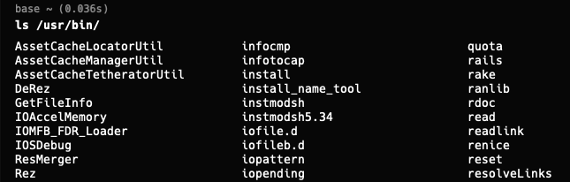

Linux
Understand GNU / Linux
An alternative solution to AT&T Unix OS — which is not a free OS. GNU is an OS, often used with the Linux kernel. An OS kernel is a program allocating a computer resources (CPU, memory, etc.) to programs.
There are many variants of GNU/Linux, including:
Ubuntu
Kali Linux
MacOS (yes, MacOS)
Linux Directory Structure
/
├── home
├── usr
│ ├── bin
│ ├── sbin
│ └── local
│ ├── bin # executable programs such as ssh, telnet, kill, and less
│ ├── sbin # commands to boot the system such as reboot and shutdown
│ └── local
│ ├── bin # user's executable programs
│ └── sbin # system administration commands belong to users
├── proc # files for monitoring processes such as /proc/cpuinfo
├── etc # configuration files
└── tmp # temporary filesFor example, if you use ls /usr/bin, you will see a list of executable programs on your computer:

Basic Commands
| Command | Description |
|---|---|
cd, pwd, ls |
Navigate and list files |
cp, mv, rm |
Copy, move, and remove files |
cat, head, tail |
Display the contents of a file |
echo |
Display a message |
wget, curl |
Download a file from the internet |
tar |
Archive and compress files |
find .name ".log" -size +1G |
Search for files with name containing “.log” and size larger than 1G |
grep |
Search for patterns in files |
chmod, chown |
Change file permissions |
history, exit, shutdown, uptime |
Others |
Fun fact (directory)
A directory is just a file containing the names of other files.
Shell, Console, and Terminal
- Shell: a program that interprets the commands you type (bash, zsh, etc.).
- Console: a physical device that allows you to interact with the computer. (keyboard, mouse, etc.)
- Terminal: a program that allows you to interact with the computer. (xterm, gnome-terminal, etc.)